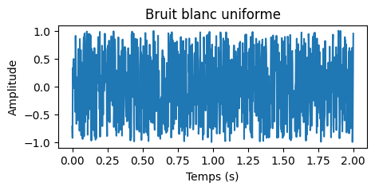
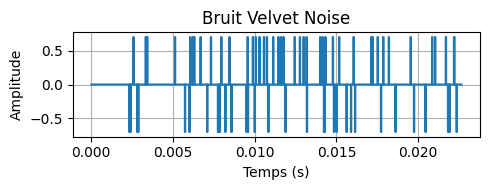

Introduction
Le bruit correspond à l'ensemble des perturbations aléatoires, généralement indésirables, qui s'ajoutent à un signal utile. Il est un élément clé de la physique, de l'ingénierie et même de la biologie, où il est essentiel pour la compréhension des fluctuations intrinsèques des systèmes. Selon la classification établie, les origines de ce phénomène peuvent être thermiques, électroniques, acoustiques ou biologiques. Dans le cadre de notre analyse, nous avons procédé à une modélisation mathématique du bruit. Cette modélisation s'est faite à l'aide d'un processus stochastique, qui nous a permis de démontrer rigoureusement la nature aléatoire fondamentale de ce dernier.
L'étymologie du terme anglais noise, qui signifie « bruit », remonte à l'ancien français noise, signifiant « querelle » ou « tumulte ». Ce terme est lui-même dérivé du latin nausea, qui désignait à l'origine le mal de mer ou un état de trouble, avant de signifier une agitation confuse. Au fil du temps, le terme a connu une évolution sémantique, passant de la désignation d'un son désagréable à celle d'un son fort et discordant, pour s'imposer finalement dans le vocabulaire scientifique. Dans le contexte actuel, le terme noise ou bruit représente avec exactitude la notion de perturbation aléatoire, parasite et généralement indésirable, notamment dans les domaines de l'acoustique, du traitement du signal et de l'électronique.
Origines physiques du bruit
Le bruit trouve son origine dans de nombreux phénomènes physiques fondamentaux. Parmi les principales sources, on distingue :
- Bruit thermique (ou bruit de Johnson-Nyquist) : dû à l’agitation thermique des porteurs de charge dans un conducteur. Sa densité spectrale de puissance est donnée par :
\[S_V(f) = 4 k_B T R \] où \( k_B\)est la constante de Boltzmann, \(T\) la température absolue, et \(R\) la résistance. - Bruit de grenaille (ou bruit de Schottky) : lié à la nature discrète du transport de charge (électrons, photons). Sa densité spectrale de courant est :
\[S_I(f) = 2 q I\] où q est la charge élémentaire et \(I\) le courant moyen. - Bruit de génération-recombinaison : présent dans les semi-conducteurs, dû aux transitions aléatoires entre états d’énergie.
- Bruit \(1/f\) (ou bruit de flicker) : caractérisé par une densité spectrale de puissance décroissant comme \(1/f\).
Classification du bruit
Le bruit peut être classé selon plusieurs critères :
- Selon l’origine : physique (thermique, quantique), électronique, environnemental, biologique.
- Selon la statistique : bruit gaussien, bruit uniforme, bruit impulsionnel.
- Selon le spectre :
- Bruit blanc : spectre plat.
- Bruit rose : spectre \( \propto 1/f\).
- Bruit brun : spectre \( \propto 1/f^2\).
- Bruit bleu, violet, etc.
- Selon la temporalité : stationnaire, non stationnaire.
Mesure et traitement du bruit
La mesure du bruit s’effectue à l’aide d’instruments adaptés (voltmètre efficace, analyseur de spectre, sonomètre). Les grandeurs caractéristiques sont :
- Valeur efficace (RMS) :
- Densité spectrale de puissance :
Le traitement du bruit vise à réduire son impact ou à l’extraire d’un signal utile. Les méthodes incluent :
- Filtrage (passe-bas, passe-bande, etc.)
- Moyennage temporel ou spatial
- Techniques de débruitage (transformée de Fourier, ondelettes, etc.)
Applications positives du bruit
Si le bruit est souvent considéré comme une nuisance, il possède aussi des applications bénéfiques :
- Stimulation stochastique : amélioration de la détection de signaux faibles par ajout de bruit (stochastic resonance).
- Cryptographie : génération de clés aléatoires à partir de bruit physique.
- Simulation et modélisation : bruit utilisé pour simuler des phénomènes naturels ou des incertitudes.
- Création artistique : bruit sonore ou visuel pour la synthèse d’ambiances, textures, etc.
Processus de génération de bruit
La génération de bruit peut se faire par :
- Sources physiques : diodes, résistances, tubes photomultiplicateurs, etc.
- Algorithmes numériques : générateurs pseudo-aléatoires (PRNG), bruit de Perlin, bruit simplex, etc.
Exemple de génération numérique d’un bruit blanc gaussien :
\[x_i = \sqrt{-2 \ln(u_1)} \cos(2\pi u_2)\]où \(u_1\) et \(u_2\) sont deux variables aléatoires uniformes sur \([0,1]\) (méthode de Box-Muller).
Catégories de Bruit
Le bruit est un phénomène physique aléatoire présent dans de nombreux systèmes naturels. Dans le cadre de la production d'un bruit réellement aléatoire, nous utilisons des générateurs basés sur des processus physiques imprévisibles, tels que la radioactivité, les fluctuations thermiques ou le comptage de photons. Ces générateurs, dits physiques ou TRNG (True Random Number Generators), sont particulièrement utilisés dans les secteurs sensibles, comme la cryptographie ou la sécurité informatique. À l'inverse, dans les contextes scientifiques, techniques ou artistiques où la reproductibilité est souhaitée, on utilise des générateurs de nombres pseudo-aléatoires ou PRNG (Pseudo-Random Number Generators). Ces derniers produisent des séquences de nombres qui imitent l'aléatoire, mais sont en réalité entièrement déterminées par des algorithmes mathématiques. Bien que ces séquences soient prévisibles une fois leur source identifiée, elles offrent une solution efficace pour générer du bruit dans un large éventail d'applications informatiques.
On distingue donc deux grandes familles :
- Bruit réel (TRNG) : généré à partir de phénomènes physiques (radioactivité, bruit thermique). Utilisé en sécurité et cryptographie.
- Bruit pseudo-aléatoire (PRNG) : généré par des algorithmes déterministes. Reproductible, utilisé en simulation, modélisation ou création artistique.
Générateurs de Bruit Pseudo-Aléatoire
Les générateurs pseudo-aléatoires produisent des séquences de nombres imitant le hasard, mais basées sur des algorithmes déterministes. Ils sont essentiels en simulation, modélisation, graphisme et audio. Voici les principaux :
Générateur Congruentiel Linéaire (LCG)
Bien qu’ils soient simples et rapides, leur faible complexité les rend peu adaptés aux applications exigeantes, notamment en cryptographie. Ils sont basés sur la formule :
\[X_{n+1} = (a X_n + c) \mod m\]où \(X_n\) est l'état actuel, \(a\) est le multiplicateur, \(c\) l'incrément et \(m\) le module. La période maximale est \(m\), mais elle est souvent bien inférieure.
Registre à Décalage à Rétroaction Linéaire (LFSR)
Utilisé en matériel embarqué, il est basé sur des opérations de décalage et de XOR. Il génère des séquences pseudo-aléatoires avec une période maximale de \(2^n - 1\), où \(n\) est la taille du registre.
\[X_{n+1} = X_n \oplus (X_n >> k)\]où \(k\) est le nombre de bits de décalage.
Mersenne Twister (MT19937)
Un des générateurs les plus utilisés, il a une période de \(2^{19937} - 1\) et est basé sur des opérations de bitwise. Il utilise un tableau d'état de 624 entiers pour produire des nombres pseudo-aléatoires.
\[X_{n+1} = (X_n \oplus (X_n >> 1)) \oplus (X_n >> 2)\]Il est connu pour sa bonne distribution et sa rapidité.
Générateur de Nombres Aléatoires Cryptographiquement Sécurisés (CSPRNG)
Conçu pour la sécurité, il utilise des primitives cryptographiques pour générer des nombres aléatoires. Il est essentiel dans les applications nécessitant une forte sécurité, comme la cryptographie.
\[X_{n+1} = H(X_n)\]où \(H\) est une fonction de hachage cryptographique.
Les différents types de bruit
Bruit blanc
Contient toutes les fréquences avec la même intensité. Utilisé comme référence dans l’analyse des signaux et en audio.


Bruit rose
Contient plus d'énergie dans les basses fréquences (puissance décroît comme 1/f). Utilisé pour le traitement audio et les systèmes biologiques.
Dans le bruit rose, l'énergie est égale par octave de fréquence. L'énergie du bruit rose à chaque niveau de fréquence diminue toutefois d'environ 3 dB par octave. C'est le contraire du bruit blanc, qui a la même énergie à tous les niveaux de fréquence
Bruit brun (brownien)
Énergie décroît comme \(1/f^2\). Utilisé en modélisation de phénomènes naturels et en audio pour des sons plus graves.
Autres formes de bruit
Il existe des formes de bruit particulier. Par exemple, le bruit de Perlin et le Velvet Noise. Ce sont à la fois une méthode de génération et un type de bruit spécifique. Ils possèdent des propriétés particulières.
Bruit de Perlin
Le bruit de Perlin a été inventé par Ken Perlin en 1983 pour générer des textures naturelles dans les effets spéciaux. Il permet d'obtenir un bruit lisse qui évite l'aspect granuleux du bruit blanc. Contrairement au bruit blanc, le bruit de Perlin est continu et possède une dérivée continue, donnant une apparence ou un son beaucoup plus naturel. L'algorithme de génération du bruit de Perlin suit les trois grandes étapes qui suivent :
- Génération d'une grille de gradients pseudo-aléatoires : On associe à chaque point entier d'une grille un vecteur de gradient choisi pseudo-aléatoirement.
- Calcul des produits scalaires : Pour chaque point à interpoler, on calcule le produit scalaire entre le vecteur de gradient de chaque coin de la cellule et le vecteur allant de ce coin au point considéré. \[\text{influence}(p_i) = g(p_i) \cdot (P - p_i)\] où \(g(p_i)\) est le gradient au point \(p_i\) et \(P\) est le point à interpoler.
- Interpolation des produits scalaires : On interpole ces produits scalaires en utilisant une interpolation lissée, souvent une interpolation de type "fade" (\( \text{fade}(t) = 6t^5 - 15t^4 + 10t^3\)) pour obtenir une transition douce entre les valeurs. \[\text{Perlin}(p) = (1 - \text{fade}(t)) \times \text{influence}(p_0) + \text{fade}(t) \times \text{influence}(p_1)\]

Bruit de Perlin
Velvet Noise
Le velvet noise est un train d'impulsions positives et négatives aléatoires d'une seule longueur d'échantillon. D'un point de vue numérique, il s'agit d'une séquence aléatoire des trois valeurs suivantes : -1, 0 et 1. Le taux (et donc la densité) du bruit peut être contrôlé en modifiant la probabilité de génération d'une valeur zéro. $$v[n] = \left\{\begin{array}{ll} \pm 1 & \text{avec prob p} \\ 0 & \text{avec prob (1-p)} \end{array} \right.$$ Le velvet noise est souvent utilisé dans la synthèse de réverbérations, car il permet de simuler des réflexions sonores naturelles. Il est également utilisé dans les applications audio pour créer des effets de texture et de profondeur. Sa caractéristique principale est sa parcimonie, c'est-à-dire qu'il contient peu d'impulsions par rapport à un bruit blanc, ce qui le rend plus doux et moins agressif à l'oreille.

Velvet Noise
Références
- John B Johnson. “Thermal agitation of electricity in conductors”. In : Physical Review 32.1 (1928), p. 97-109.
- TLFi. Trésor de la Langue Française informatisé. Last accessed 12 Jun 2025. url : https://www.cnrtl.fr/etymologie/bruit.
- Wikipedia contributors. “Musique bruitiste”. In : Wikipedia, url : https://fr.wikipedia.org/wiki/Musique_bruitiste
- Harry Nyquist. “Thermal agitation of electric charge in conductors”. In : Physical Review 32.1 (1928), p. 110-113.
- Leon Cohen. “The history of noise [on the 100th anniversary of its birth]”. In: IEEE Signal Processing Magazine 22.6 (2005), pp. 20–45